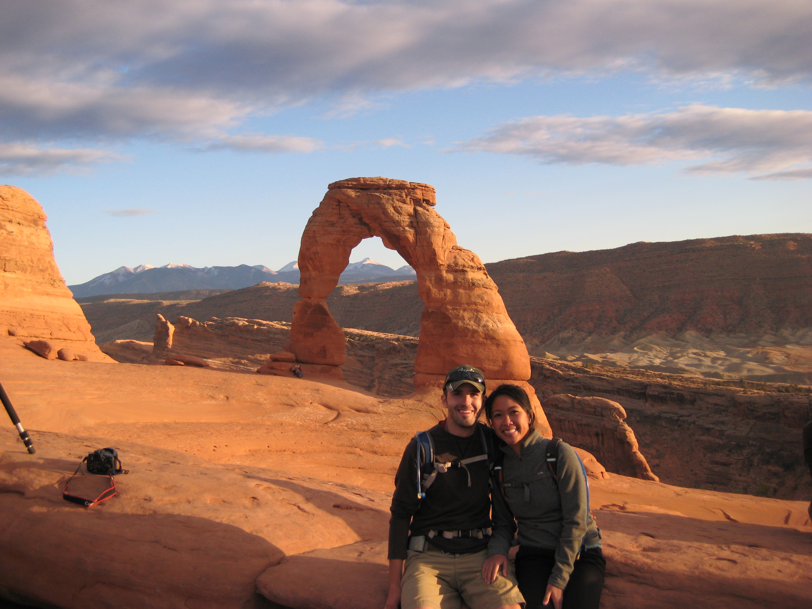
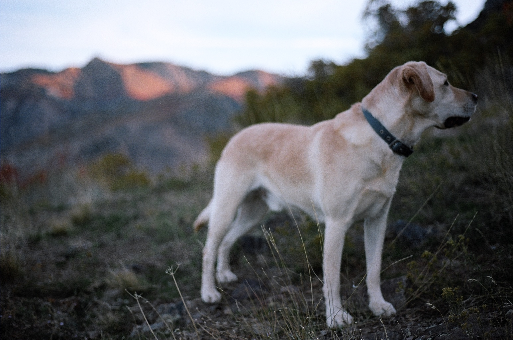
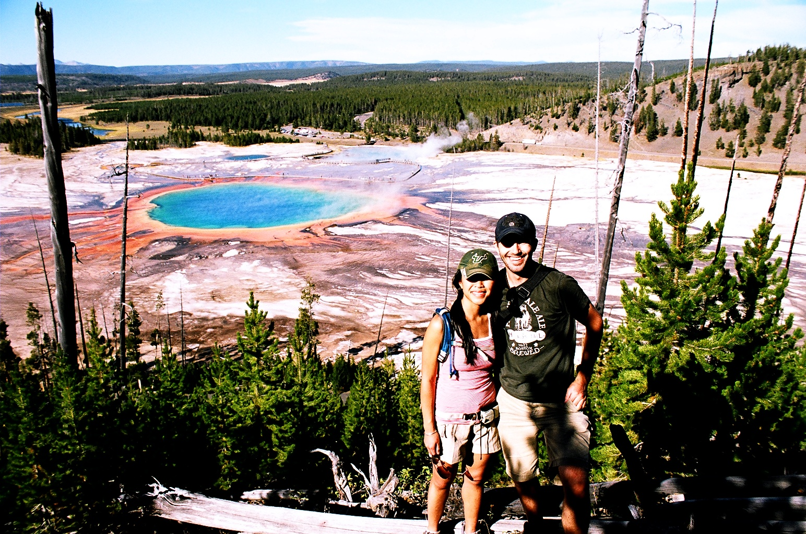

Recent Posts
Amidst a City of Red Rock
Delicate Arch | Arches National Park | Moab, Utah
Tony and I made several camping trips down to southern Utah. The Arches National Park is usually a stop for us when visiting Moab. The arches are beautiful in itself, and the quiet surrounding adds a remoteness you can't get in most places. There are so many trails to explore, you can spend many hours there. Also, the town of Moab is a great spot to grab a bite if you want to venture into town after a hard day of mountain biking. This is definitely a place we will return to.
Evening Stroll in the Wasatch Mountains
Wasatch Mountains | Ogden, Utah
Living in Ogden gave us quick access to the hiking trails. After a day in the office, it was a normal evening routine for us to do a quick hike with our yellow lab, Jack. This is one of the things I miss most about living in Utah. Hiking trails, climbing routes, ski resorts were all within a 30 minute drive.
I Can Almost Reach the Clouds

Mt Timpanogos | Utah
This was one of the most memorable hikes I've ever experienced. It was quite long but very much worth it. We trekked through the woods, crossed a field of beautiful spring wild flowers, came across a few mountain goats, and witnessed hikers skiing down the glaciers at the top of the peak.
After a long and strenuous hike that started before the sun came up and ended well into the afternoon, we rewarded ourselves with a feast at In n Out. What a day.
Yellowstone, A Natural Watercolor
Yellowstone National Park | Wyoming
After several years in Utah, Tony and I finally took a road trip to Wyoming to visit Yellowstone. What a sight it was to witness the geysers and the natural beauty of this national park.